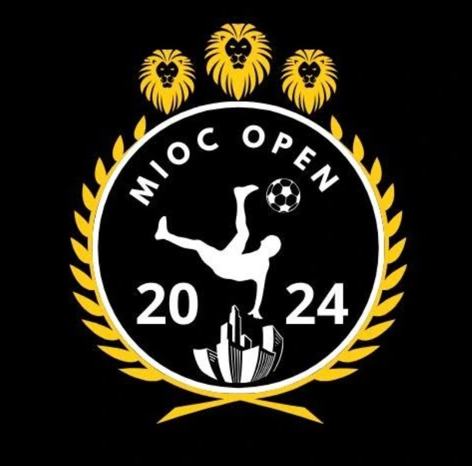

MIOC Open nogometni turnirIĆ
Najbolji turnir na cilome svitu! Grupna faza, ždrijeb, penali, produžeci i jedna šuplja rukavica.

Što je MIOC Open?
Tri mjeseca nogometa, četiri grupe i jedan trofej. Evo kako to izgleda.
MIOC Open je turnir koji okuplja najbolje igrače III. gimnazije i traje otprilike 3 mjeseca. Kako biste sudjelovali na turniru, treba platiti simboličnu kotizaciju organizatoru.
Organizator je uvijek neka ekscentrična osoba kojoj je organiziranje turnira sve u životu.
Igra se grupna faza, a nakon toga se igra ždrijeb. Osvajaču se uručuje trofej najboljeg, a dijele se i pojedinačne nagrade.
Zanimljivosti
- Ovo je treći put da je turnir došao do kraja!
- Kuzma je poznat kao „šuplja rukavica”.
- Kuzma je vratio svoj vatromet.
- MIOC Open je turnir s najmanjom gledanošću u Splitu.
- Nekada se izlazi iz škole da bi se sudila utakmica MIOC Opena.
Turnir u slikama
Prijeđi prstom ili koristi strelice.
Himne turnira
Grupe ove godine
Klikni na ekipu za njezinu priču s turnira.
Grupa
A-
Organizatori turnira. Od početka su bili jedni od favorita za prvaka, kroz grupnu fazu se prošetali bez poraza i tako nastavili u četvrtini finala gdje su jednu od boljih ekipa (3.C) savladali s rezultatom od 3:1. Ipak, njihova slava staje u polufinalu gdje su izgubili od viceprvaka turnira (3.B) s razlikom od jednog gola. I na kraju osvajaju 3. mjesto bez odigrane utakmice. Od igrača se mogu izdvojiti imena poput Tonća Kraljevića, Vite Drnjevića, polivalentnog Tonija Ramljaka i daleko najgoreg golmana Kuzme Krstinića. Uspjesi: 3. mjesto (x3), polufinale Mioc Klozeda (nedovršen turnir), finale Mioc Opena (nedovršen turnir).
-
Ekipa s vrlo malo mana, konstantna i radna ekipa. Sve utakmice igraju na vrijeme, imaju vrlo otvoren raspored. Grupnu fazu su odigrali fantastično osim utakmice protiv prvoplasiranog 4.F gdje su izgubili s vrlo malom razlikom od 4:3. Ali nakon grupne faze sreća im je stala, gdje su odmah u osmini finala izgubili protiv godinu starijeg 3.E s rezultatom od 4:2. Od igrača možemo izdvojiti jednog jedinog Timu Bremeca koji je nosio cijeli razred na leđima.
-
Ekipa spremna za borbu, nije igra to što im donosi već želja za pobjedom koju upečatljivo pokazuju na terenu. Vrlo čvrsto su se postavili na 3. mjesto grupne faze iz koje su se dalje kvalificirali u knockout fazu turnira. Međutim, osmina finala im nije baš dobro sjela gdje ih je 2.B razmontirao s velikim rezultatom od 6:1. Nijedan igrač u ovoj ekipi se nije istaknuo kao najbolji, svaki je odigrao jednako dobro, čime su dobili ove ne loše rezultate.
-
Prva ekipa koja se nije plasirala u knockout fazu. Do zadnje utakmice su bili bez ijednog boda, ali na zadnjoj utakmici grupe su pokazali svoje pravo lice i ošamutili 1.F s pobjedom od 6:1. Od igrača se posebno istaknuo Kristijan Puljić koji bi osim karijere u badmintonu mogao uzdignuti i svoju karijeru u futsalu bez problema.
-
Ekipa bez iskustva, ali s dobrim potencijalom. Jedine svijetle točke su nastupi njihovog razrednika, ujedno i profesora fizike Mladerna Zovka, koji pokušava pomoći svom razredu, ali je ipak bez sreće.
-
Daleko zadnja ekipa u grupi A s 0 bodova. Potencijal ekipe je trenutno nevidljiv, fali uigranosti, a i tehnike. Vrlo se malo predviđa za ovu ekipu u daljnjim turnirima. Svaka čast za sudjelovanje.
Grupa
B-
Najveći favoriti u ovome turniru po publici i novinarima. Također, povijesno najuspješnija ekipa na turniru. Jedna od uigranijih i iskusnijih momčadi u povijesti MIOC-a, sve od obrane do napada, i bome su to pokazali i na ovome turniru. Prošetali su se kroz grupnu fazu sa svim pobjedama, ali u knockout fazi svaka utakmica im je bila sve zanimljivija i zanimljivija: četvrtinu i polufinale su, nakon produžetaka, obje dobili na penale, gdje se treba istaknuti Ante Kotromonavić s odlično pucanim penalima. U finalu se natječu protiv ekipe koja je dobila nagradu za neočekivano dobre nastupe (3.B) i tu su nakon teških i mukotrpnih produžetaka izašli s pobjedom. Od igrača se, uz Kotromonavića, treba istaknuti mladi Toni Perajica koji spašava 4.D u velikim trenucima, nakon njega i glavni glazbenik turnira Roko Odak te daleko najnonšalantniji igrač Roko Pavić.
-
Ekipa s velikim očekivanjima, a malom realnošću. Po imenima jedna od boljih ekipa turnira, ali fali uigranosti. Grupna faza odlično odigrana sa svim pobjedama osim protiv prvaka turnira (4.D). A osmina finala je njima označila kraj turnira gdje su protiv 3.C ipak izvukli tanji kraj i izgubili 4:3. Vrlo čvrsta ekipa sa širokom momčadi. Treba se istaknuti najbolji golman turnira Luka Jugov koji brzim refleksima i odličnom tehnikom spašava svoju ekipu u teškim trenucima.
-
Zadnja ekipa koja je u svojoj grupi bila plasirana u daljnje bitke, solidna i čvrsta ekipa s velikim nedostatkom igrača. Od najbitnijih je istaknut Borna Avramovski koji im je ujedno i najbolji igrač, međutim, ozljeda je učinila svoje. Grupna faza odigrana neloše uz male prepreke. Ali osmina finala je bila s njihove strane utakmica za zaboraviti gdje ih je 2.C masakrirao 7:2.
-
Jedni od lošijih maturanata što se tiče MIOC turnira (u igri i sudjelovanju), a to su pokazali i u grupnoj fazi gdje im je jedna pobjeda falila za plasman dalje u knockout fazu. Vrlo velik problem je manjak želje za pobjedom i tako su zapravo samo ostvarili pobjede protiv ekipa nižeplasiranih od njih.
-
Ekipa s manjkom iskustva. Očekuje se da će se za par turnira, kada se uigraju i bolje upoznaju, ipak poboljšati i moguće je da ćemo ih vidjeti u borbi s velikanima turnira u bliskoj budućnosti.
-
Ekipa bez iskustva, a ni potencijala. U grupi završili zadnji bez pobjede, nisu ni pokazali želju za sudjelovanjem.
Grupa
C-
Vrlo talentirana i radna ekipa koja je ipak završila grupu na 1. mjestu i plasirala se direktno u četvrtinu finala. Grupnu fazu prošli su bez ijednog poraza, u zadnjoj utakmici su protiv drugoplasiranog 2.B odigrali hrabru i tešku utakmicu gdje su ipak izašli s pozitivnim rezultatom od 7:0. U svojoj idućoj destinaciji (četvrtina finala) izgubili su protiv najboljih drugaša na turniru, 2.C, 5:3 i s time završili svoj put prema osvajanju. Od igrača se treba istaknuti Tin Galinović koji svojom tehnikom i mirnoćom nosi ovaj tim na svojim leđima.
-
Pokretna i talentirana momčad. U zadnjoj utakmici grupe izgubili su svoju jedinu utakmicu protiv prvoplasiranog 2.F, što ih spušta na 2. mjesto grupne faze. Dalje u osmini finala pokazuju klasu protiv maturanata (4.B) s pobjedom 6:1. Ali njihov put na idućoj utakmici završava gdje ih viceprvaci turnira (3.B) jedva dobivaju s rezultatom 4:3.
-
Zadnja ekipa u grupi C koja se plasirala u knockout fazu. Prve dvije utakmice nisu skupili ni boda i to ih je vjerojatno malo protrglo da se više ulože u turnir i prođu dalje. Iduće dvije utakmice su se činile kao raj za njih gdje su skupili 6/6 bodova i podigli gol razliku za +14. Nadalje, u osmini finala su pokazali da su zaslužili proći dalje pobjedom 4:2 protiv 2.E. Međutim, u četvrtini finala su označili kraj turnira s vrlo impresivnom utakmicom protiv prvaka turnira (4.D) gdje su ih čak odveli na penale, nažalost 4.D je bio iskusniji na penalima. Vrlo tvrdoglava momčad (u dobrom smislu) i karakterna.
-
Prva ekipa koja se nije plasirala u daljnju fazu. Sve je ovisilo o njima za proći dalje, međutim, zadnju utakmicu protiv 3.E su prodali i na kraju tužno ispali iz turnira. Tu se vidi neiskusnost i strah, ali velika je mogućnost da ova ekipa dalje terorizira turnir dobrim rezultatima u bliskoj budućnosti.
-
Vrlo loše organizirana ekipa s malo, pa skoro i ništa želje za igrom. Ne vidi se nikakva promjena od prošlih turnira, ali tko smo mi da sudimo. Imaju još dvije godine mukotrpnog rada i možda se dignu u nebo i zavladaju.
Grupa
D-
Grupa D, najnapetija grupa turnira, gdje su se tri ekipe borile za 1. mjesto i direktan plasman u četvrtinu finala, a deblji kraj je izvukao 3.B koji se ipak plasirao prvi na tablici. Čim je pobijedio sve utakmice u takozvanoj grupi smrti, znalo se da će biti jedna od jačih ekipa dalje, a to je i pokazao. Prošetao se kroz četvrtinu finala gdje je 2.B dobio 4:3. A u polufinalu, gdje su organizatori bili teški favoriti, pokazali su želju za pobjedom i dobili isto 4:3. U finalu su uz mukotrpnu borbu ipak izašli kao gubitnici nakon 2 petominutna produžetka. Iduće godine se vjeruje da će dominirati.
-
Daleko najbolji drugaši su sve pobijedili u grupnoj fazi osim prvoplasiranog 3.B. Drugaši su pokazali pokretnost i da mogu puno trčati, što se u ovim turnirima malo viđa, i tako došli do polufinala gdje su nažalost izgubili od prvaka na penale. Treba se istaknuti Toma Pivčević koji se pokazao kao najbolji strijelac turnira s velikim brojem lijepih pogodaka.
-
Vrlo solidna ekipa bez puno mana, a s puno vrlina. Pokretni i tehnički odlični. U grupnoj fazi su nažalost bili bez sreće i plasirali se 3., ali dovoljno za prolaz. U osmini finala su dobili godinu starijeg 4.C s vrlo uskim rezultatom od 4:3, a u četvrtini su ipak dobili jednu od težih ekipa (4.F) i tu završili svoj mukotrpan put na turniru.
-
Vrlo malo dobroga za reći za ovu ekipu, jedina pobjeda im je bila protiv nižeplasiranih od sebe (1.E) i to je otprilike to. Možda je problem bila grupa u kojoj su igrali, ali sve u svemu trebaju to bolje.
-
Loša ekipa i skroz neorganizirana. Možda se u budućnosti poboljšaju, ali za sada se ne vidi nikakav potencijal ni prostor za poboljšanje.
🏆 4.D prvak · 🥈 3.B finale · 🥉 4.F treće mjesto
Nagrade
Klikni na karticu za punu fotografiju.
Individualne nagrade
Grupne nagrade
Krempijevo
Teren kod III. gimnazije u Splitu. Dođi navijati — gledanost nam treba.
Karta je isključena
Google Karte postavljaju vlastite kolačiće. Prikazat ćemo kartu tek kad dopustiš vanjski sadržaj.
ili otvori u Google Kartama ↗Ima li tvoj razred što treba?
Skupi ekipu, plati simboličnu kotizaciju i pokušaj skinuti 4.D s trona.
Prijavi se na sljedeće izdanje